A shared logbook for a newborn's feeds, diapers, pumping and mom's meds. Two phones, one live dataset, built for one-handed use at 3 am. This page follows how it changed over its first ten days.
57 releases46 days5 tabs44 automated testsLive at bebe.fyi
The home screen, three days running
Same demo data on each. What changed is how much the screen asks of a tired parent.
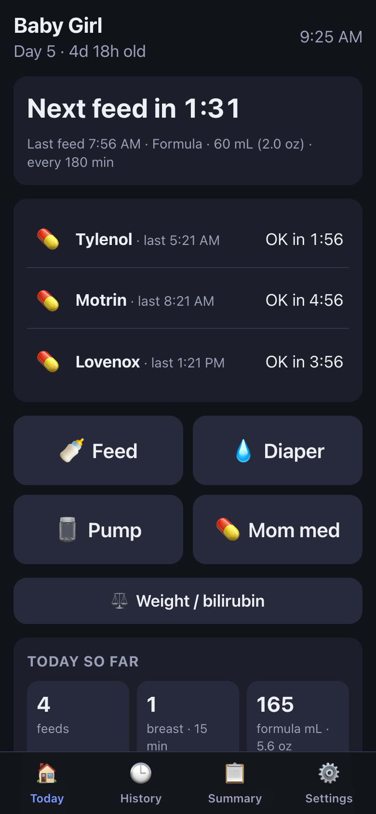
Sep 12 · first releaseOne big feed timer, big buttons, and the day's totals pushed below the fold.
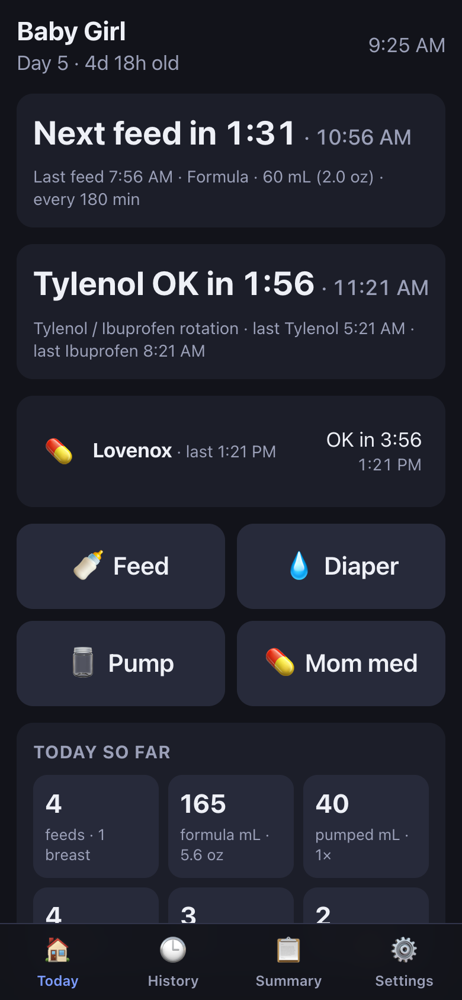
Sep 13 · rotation and clock timesSmarter, but each card grew and the totals sank further.
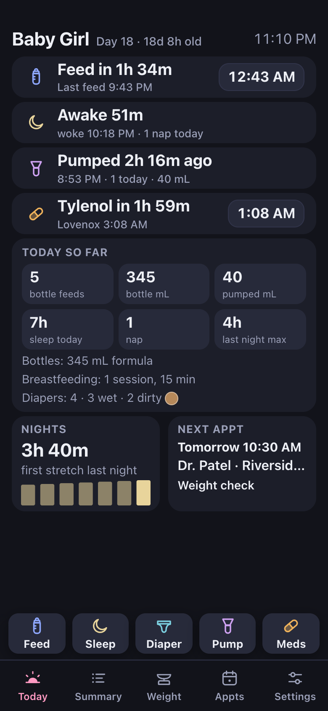
Sep 14 onward · everything on one screenTimers, totals, weight and the next appointment fit without scrolling. Logging moved to a dock.
1.0
Fri Sep 12 · evening
First night
Four screens. Today with a next-feed countdown and quick-log buttons, History, a per-day Summary table for the pediatrician, and Settings.
Two phones, one log. Entries appear on the other phone in about a second. Logging works offline and catches up when the signal returns.
No accounts. A private link is the key. Open it once, add it to the home screen, done.
Fast entry. A bottle feed is three taps, a wet diaper is two, every time field defaults to now with −5 / +5 nudges.
Delete with undo. Nothing is ever hard-deleted, and a ten-second Undo follows every delete.
Scope cut the same evening. Weight and bilirubin tracking came out. The app is for feeds, diapers, pumping and meds.
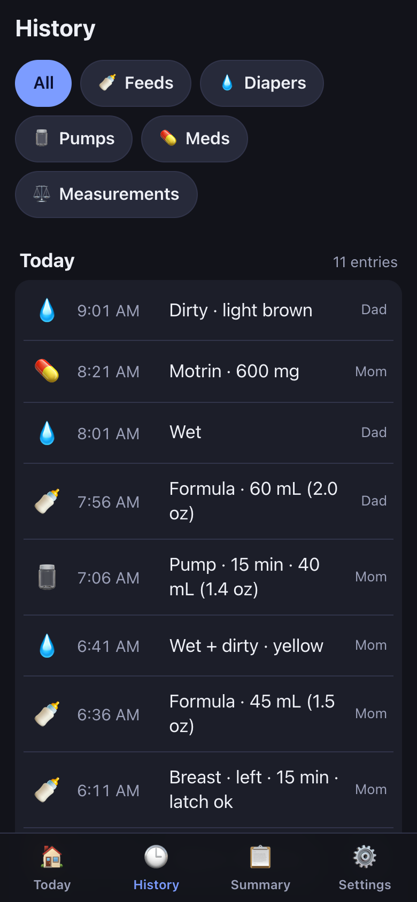
HistoryEvery entry, newest first, tap to edit.
1.1
Fri Sep 12 · late
Meds on a schedule
Countdown per med. Enter the hours between doses from the discharge sheet and Today shows "Lovenox in 3:57". The app never suggests an interval or a dose.
Staggered Tylenol / Ibuprofen. One "next up" line that alternates between the two, honouring each med's own interval and the gap between them.
Clock times. Every countdown also shows the time it lands on, so nobody does arithmetic at 3 am.
Diaper count. A wet-and-dirty change is one diaper but two events. Today now counts both ways.
Set-up prompt. If no intervals are set yet, Today says so and links to Settings instead of silently showing nothing.
1.2
Sat Sep 13
Polish, and a rescue
Home-screen fix.fix Adding the app to an iPhone home screen opened an empty log, because iOS gives home-screen apps their own storage. The household now lives in the address itself, so the icon always opens the right data. No entries were lost.
Join screen. A phone that doesn't know a household asks for the family link instead of quietly starting a new one. Settings can switch households too.
Swipe to delete. Swipe a History row left for a red Delete, still with Undo.
Diaper sheet. The same Now / −5 / +5 time row as every other sheet, for wet, dirty or both.
Stool colours. Light brown and brown replace Other. A Diapers column joined the Summary table.
Naming. Motrin became Ibuprofen, and the app became bébé tracker, lowercase.
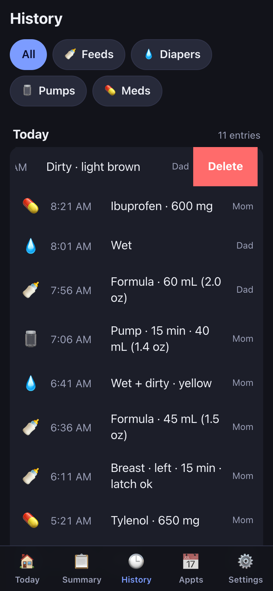
Swipe to deleteSwipe left, tap Delete, Undo if you slip.
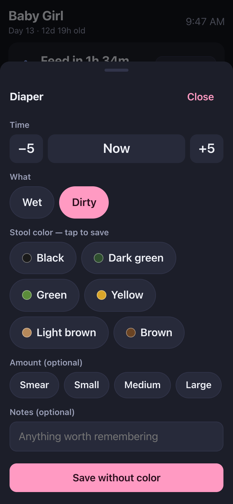
Diaper sheetTime first, then tap a colour to save.
1.3
Sun Sep 14
Appointments and a calmer home screen
Appointments tab. Pediatrician, OB, imaging or other, with date, time, location and notes. Upcoming first, past ones dimmed below, synced to both phones.
Next appointment on Today. One card with what, when and where, and how far away it is.
One-screen Today. Timers collapsed into a single card with bold due times and a short "last" line each. Totals and the next appointment sit underneath. Nothing to scroll.
The dock. Feed, Diaper, Pump and Meds moved to a fixed row above the tabs, always under the thumb, still one tap.
iOS date field.fix The date-of-birth field no longer breaks the Settings grid on iPhone.
"Mom med" is now "Meds" everywhere.
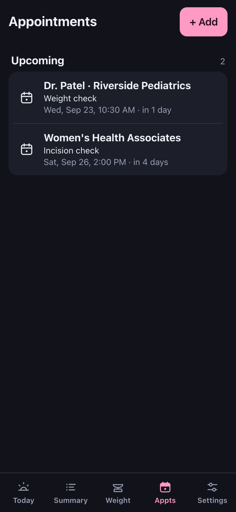
AppointmentsUpcoming, with how far away each one is.
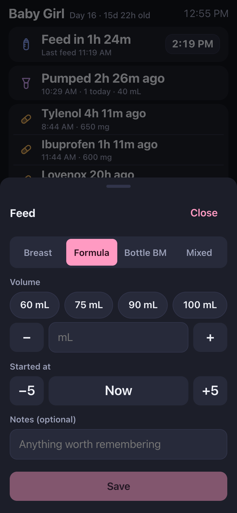
Feed sheetKind, a volume chip, Save. Three taps.
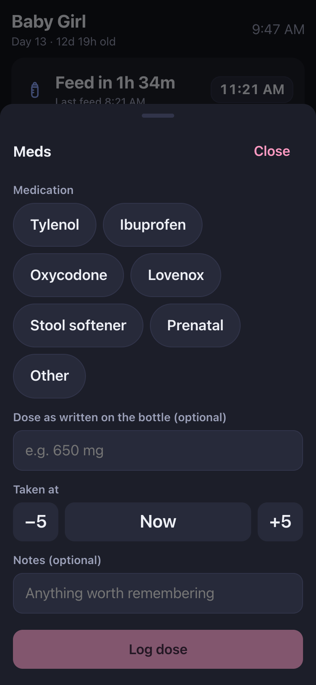
Meds sheetTap the med, optionally type the dose as written on the bottle.
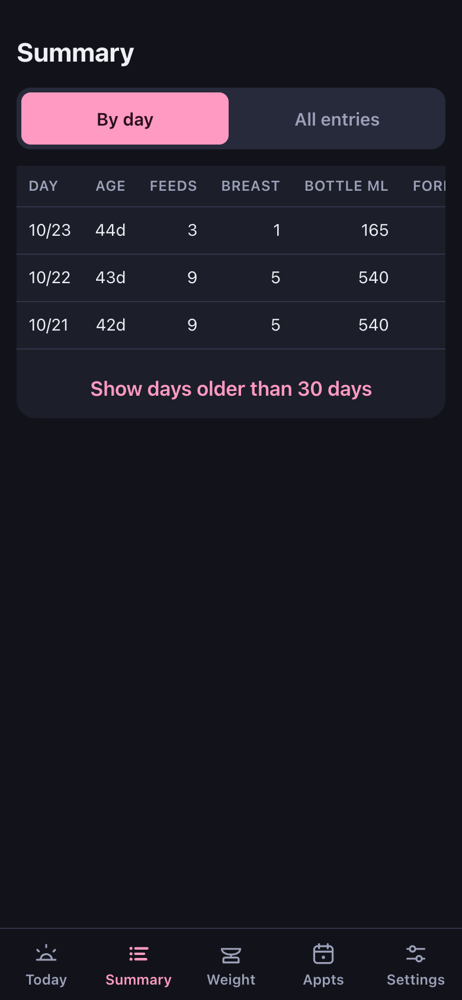
SummaryOne row per day for the pediatrician.
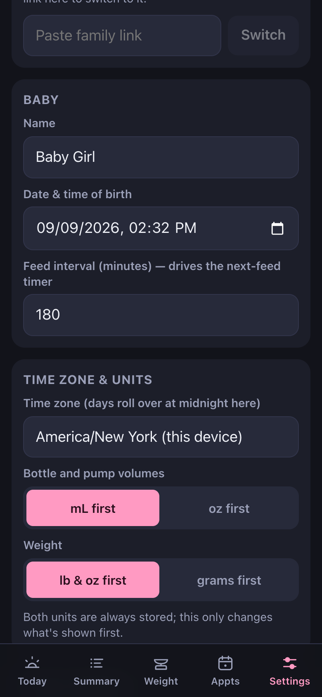
SettingsIntervals in hours, blank until you enter them.
1.4
Sun Sep 14 · evening
Weight, and a home of its own
Weight tab. Log each weigh-in in pounds and ounces, the way the pediatrician says it, with grams alongside. The first entry is the birth weight and every later one shows its change from birth and from the previous visit.
Weight chart. A line since birth with the birth weight as a reference line, labelled in pounds and ounces. Touch a point for its details.
Weight on Today. A small card with the latest weight, percent from birth, and a sparkline, next to the next appointment.
History folded into Summary. Summary now has two views, "By day" and "All entries", so the filterable list survived and the tab bar stays at five.
Bottle totals.fix The mL tally counted formula only. It now counts every bottle, with formula and breast milk broken out, and Summary gained a Bottle mL column. Breastfeeding has no volume, so it stays a session count.
bebe.fyi. The app moved to its own domain. Old links keep working, and these notes live at bebe.fyi/notes.
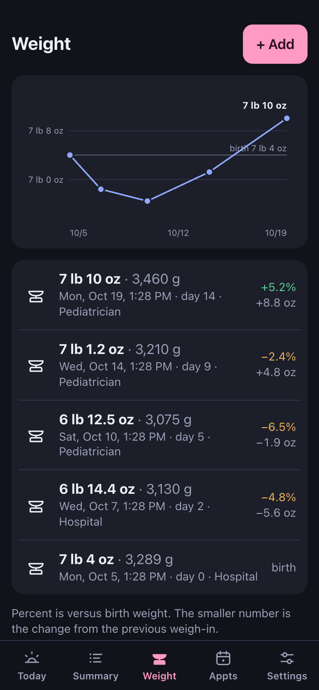
WeightChart since birth, then every weigh-in.
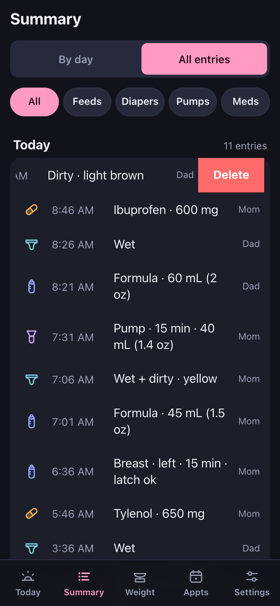
Summary · All entriesThe old History list, now inside Summary.
1.5
Sep 15 – 19
Small things, all from real use
Countdowns read like speech. "Feed in 1h 47m", "Tylenol in 2h", not "1:47". The due clock time sits in its own pill on the right of each row.
Next appointment leads with the day. "Tomorrow 10:30 AM" is the headline, then the doctor or place, then what the visit is for. A countdown appears only once it's within 24 hours. The appointment type is gone entirely: the doctor's name says more than "Pediatrician".
Weight card shows the date beside the weight, so you know when it was taken at a glance.
Summary table reshaped. Breast count out; bottle mL, formula mL and breast-milk mL side by side; pump count before pumped mL.
Icons that read on dark.fix The stethoscope emoji is drawn in dark grey and vanished on the card.
Past appointmentsfix read "-1 days ago". Now "1 day ago".
TodayPills for due times, day-first appointment card.SummaryBottle, formula and breast-milk mL side by side.AppointmentsDoctor or place first, then what it's for.
1.6
Mon Sep 21
Ready for other families
A welcome screen. bebe.fyi now explains what the app is and offers "Start your household" or "I have a family link", instead of a bare paste box.
Two-minute setup. Baby's name and birth time, who's holding the phone, feed interval, then share the link and add to home screen. Every step can be skipped and everything is editable in Settings.
A guide to send people at bebe.fyi/guide: quick start, a tour of the five screens, tips for logging in the dark, and what to know about the link and the data.
Generic defaults. New households start as "Baby" born today, not with anyone else's details.
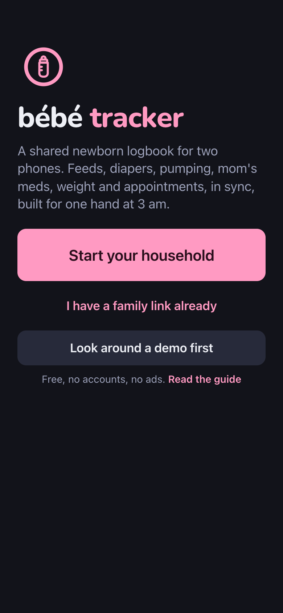
WelcomeWhat it is, then one button.
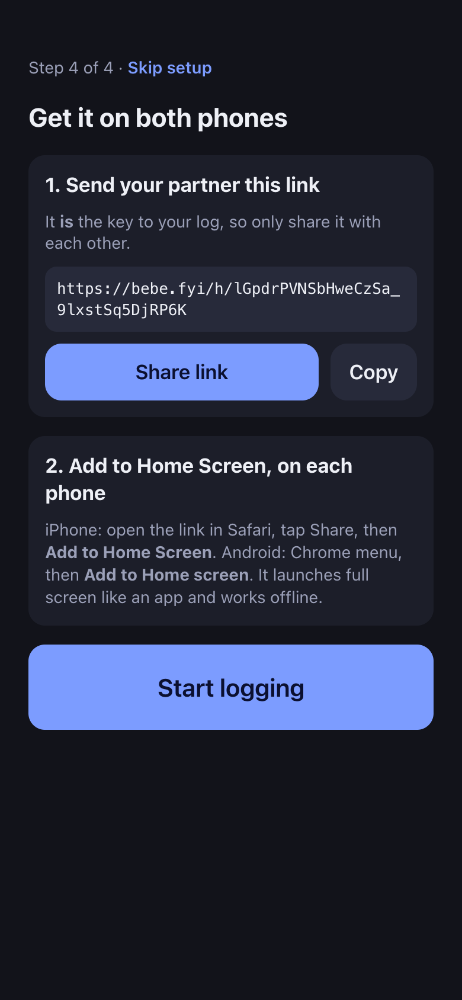
Setup, last stepShare the link, add to home screen, start logging.
1.7
Mon Sep 21 · evening
Fit for other households
Time zones.fix Days rolled over at New York midnight for everyone. A household now takes its time zone from the phone that creates it, and Settings can change it. History re-buckets to match.
Lighter loading. The app keeps the last 30 days live and fetches older days only when Summary asks for them, so a fresh phone doesn't pull the whole history on first open.
Export and backup. Settings can share a CSV of every entry or a full JSON backup through the phone's share sheet.
Delete this household. One button, two confirmations, everything gone for both phones.
Units. Choose mL or ounces first for bottles and pumping, pounds or grams first for weight. Both are always stored.
Your own meds. Add any med by name in Settings; it gets a chip and a countdown like the built-in ones.
A third caregiver. "Someone else" alongside Dad and Mom, with an editable name, for a grandparent or nanny.
Update prompt. When a new build is ready the app says so and offers a reload, instead of quietly running the old one.
Feedback link in Settings, so bug reports have somewhere to go.
1.8
Mon Sep 21 · night
Rough edges on the phone
Guide and What's new open inside the app.fix On an iPhone home-screen app a link navigated the app away from itself with no way back. They now open in a viewer with a Close button.
Update prompt you can't miss. A centered card over a dimmed screen with one button, Reload now. It shows when a new build is detected, on launch, on return to the app, and hourly.
Sync badge told the truth too loudly.fix iOS freezes the app in the background and the connection goes stale, so "syncing…" could sit for a while after coming back. The app now reconnects the moment it returns, and the badge only appears after two seconds, turning amber after fifteen so a weak signal is obvious.
1.9
Tue Sep 22
A face of its own
No more emoji. Thirty-eight of them are gone. Where a word already said it, on the filter chips, the diaper sheet, the welcome list and the update prompt, nothing replaced them.
An icon family drawn for this app. Bottle, diaper, pump flange and a half-filled capsule for the four entry types; a sunrise, a log, a baby scale, a calendar and two sliders for the tabs. One stroke weight, one grid, all descended from the bottle in the app icon, which is now real vector art instead of an emoji and looks the same on every phone.
Colour that means something. Each entry type has its own tint on its glyph alone: periwinkle feeds, aqua diapers, orchid pumps, amber meds. Rows in the log and the timers on Today scan by colour at 3 am.
Pink is the accent. The pink ring on the home-screen icon now carries through to every Save button, active tab and segment. The old periwinkle survives as the feed tint and the weight chart line.
A wordmark. "bébé tracker" is set in Nunito on the welcome screen and in the Settings footer, the only place a second typeface appears.
Smaller things. Three corner radii instead of six. The welcome screen is the mark, the name, two lines and a button. Summary's filters fit on one line. The guide and these notes wear the same face.
TodayTinted glyphs on the timers and the dock, pink active tab.The logOne glyph per row, one colour per type.WelcomeThe mark, the name, and one button.
1.10
Thu Sep 24
Weaning off the schedule
Pumping on the home screen. A new card under the feed timer: when the last pump was, how many today and how much. Set a pump interval in Settings and it counts down instead. Tap it to log a pump.
Last time only. Once mom is deciding dose by dose rather than following the discharge schedule, a switch in Settings turns the countdowns off. The meds card then lists every med taken in the last 24 hours with how long ago and the clock time, plus the dose as written. Rows appear and drop away on their own as the meds do.
Three cards, still one screen. Feed, pump and meds each get their own card, and the rows tightened so five timers still fit above the dock on an iPhone.
Guide, redone. One phone, a tab strip like the app's, one line per screen. Swipe the phone or tap a tab. Half the words.
CountdownsFeed, pump and meds, each in its own card.
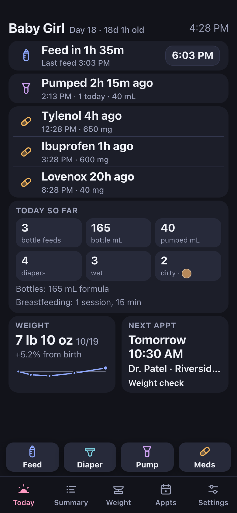
Last time onlyHow long ago, the clock time, the dose. She decides the next one.
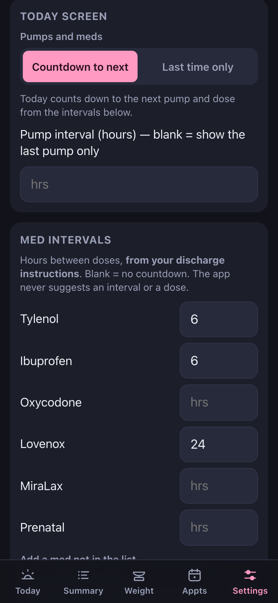
The switchOne setting, and a pump interval if you want one.
1.11
Thu Sep 25
From the couch
Last-time meds, last 24 hours. The 1.10 window was a week, which kept meds on Today long after they'd stopped. Now a med drops off a day after its last dose.
Room to breathe. With four timer rows or fewer, Today loosens up: taller rows, more space between cards. A fifth row switches back to the tight layout so everything still fits an iPhone 15 without scrolling.
Today so far reads in full sentences. Two lines under the tiles: "Bottles: 165 mL formula · 40 mL breast milk" and "Breastfeeding: 1 session, 15 min", or "none today". No more wrapping.
Bottle presets for a two-week-old. 60, 75, 90 and 100 mL replace the newborn-sized 15 to 90 chips.
MiraLax, not "Stool softener", on the meds chips and countdowns.
Nits. The feed and pump rows stand a little taller than the meds. The volume chips on the Feed sheet are centered.
TodayRoomier with four rows; Bottles and Breastfeeding spelled out.Feed sheetBigger presets.
1.12
Tue Sep 30
Export, actually
CSV export and JSON backup were failing silently.fix The request for older history asked Firestore for more rows than it allows, the error was swallowed, and the button did nothing. Fixed, and a failure now says so in a toast.
Older entries are included.fix The export could miss entries older than 30 days even when the fetch worked. Settings now loads the full history as soon as it opens, so the share sheet appears right on the tap, with everything in the file.
Home-screen fallback. An iPhone home-screen app can't download files. If the share sheet isn't available, the export is copied to the clipboard instead, ready to paste into Notes or an email.
1.13
Tue Oct 7
Breastfeeds counted apart
Feeds means bottle feeds. A breastfeed used to count as a feed with no millilitres behind it, which skewed the day's numbers. The Today tile is now "bottle feeds", and the Summary table's Feeds column counts bottles only.
Breastfeeds get their own tally. A Breast column in the Summary table, and the Breastfeeding line on Today keeps the session count and minutes. The next-feed countdown still starts from whichever feed came last.
TodayBottle feeds in the tile, breastfeeds on their own line.SummaryFeeds and Breast, side by side.
1.14
Thu Oct 23
Done with meds
Meds tracking can be switched off. A new Meds card at the top of the Settings list. Off hides the meds card on Today, greys out the Meds button in the dock, and tucks away the interval and rotation settings. Past doses stay in Summary and the exports, and everything comes back when you switch it on.
No more blur under the clock.fix On a home-screen app, newer iPhones blur a band that reaches about 40 points below the status bar, and the baby's name sat inside it. Every screen now starts below that band, and tabs open scrolled to the top.
Today rebalanced for the lower start. Three timer rows or fewer get the roomy layout; four or five switch to the tight one, which leaves out the appointment's "in 21h" line since the day and time are right above it. Five rows still fit an iPhone 15 without scrolling.
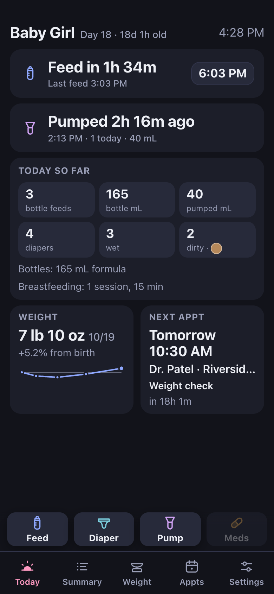
Meds offTwo cards instead of three, Meds greyed out in the dock.
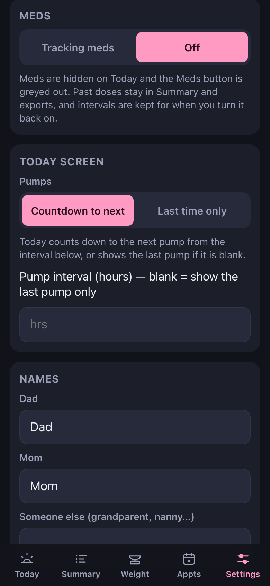
The switchNothing is deleted.
1.15
Thu Oct 23 · evening
A demo, and the source
Look around before starting.bebe.fyi/demo opens a made-up baby with a few days of feeds, diapers, pumping, meds, weigh-ins and appointments. Log, edit and change settings freely: it lives on that screen only, nothing is saved, and it never touches a real household. The welcome screen and the guide link to it.
Open source. The code is public on GitHub under the MIT license, with a short README on running your own copy on a free Firebase project.
WelcomeA third way in: the demo.
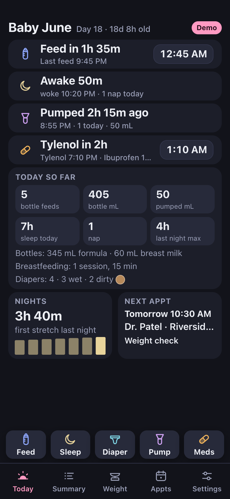
The demoSame app, pretend baby, nothing saved.
1.16
Fri Oct 24
Done with diapers
Diaper tracking can be switched off too. A Diapers card next to Meds in Settings. Off drops the diaper, wet and dirty tiles from Today, takes the diaper columns out of the Summary table, and greys out the Diaper button in the dock. Every past change stays in All entries and the exports, and switching it back on brings it all back.
Notices that leave.fix Tapping a greyed-out Meds or Diaper button showed a note that hung around for ten seconds over the dock. Plain notes now fade after a couple of seconds, and any note goes away when tapped. "Entry deleted · Undo" still waits ten seconds.
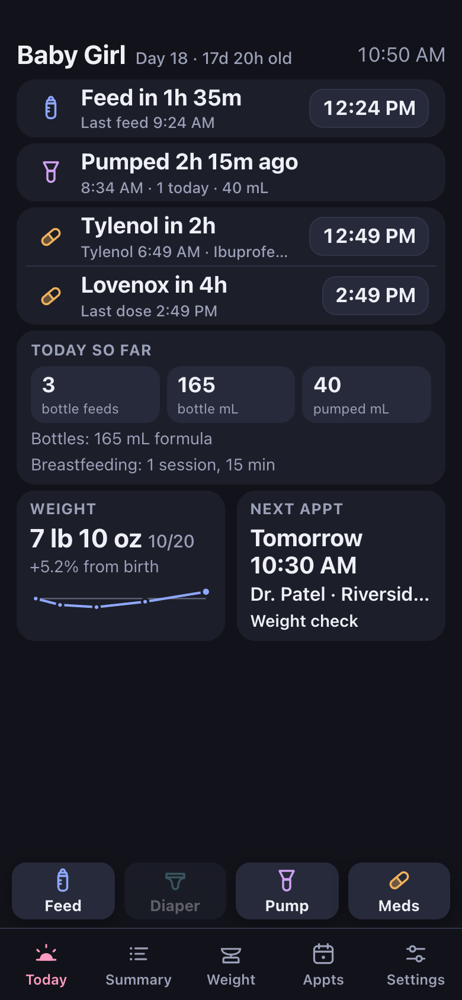
Diapers offOne row of tiles, Diaper greyed out.
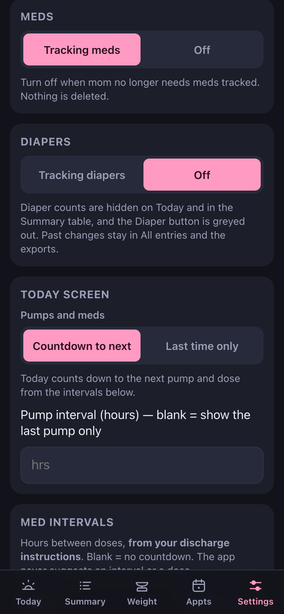
The switchesMeds and Diapers, side by side.
1.17
Mon Oct 26
Longer nights
A night interval for the feed timer. Settings has a new Feed timer card: hours between feeds, and a "Different at night" switch with its own hours and when night starts and ends. Every three hours by day and four at night, say, from 9 PM to 6 AM.
It goes by when she last ate. A 7:30 PM feed is a daytime feed, so the next one is due at 10:30 PM even though that's after nine. A feed that starts at 9 PM or later counts down the night hours. Today's feed line says which one it used: "Last feed 10:15 PM · night, 4h".
Hours, not minutes. The feed interval moved out of the Baby card and is entered in hours, like the med and pump intervals.
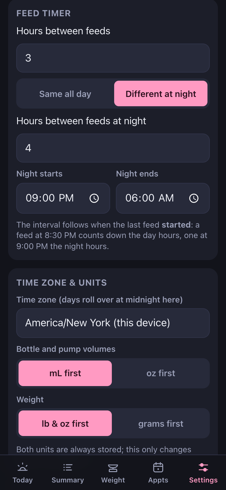
Feed timerDay hours, night hours, and when night is.
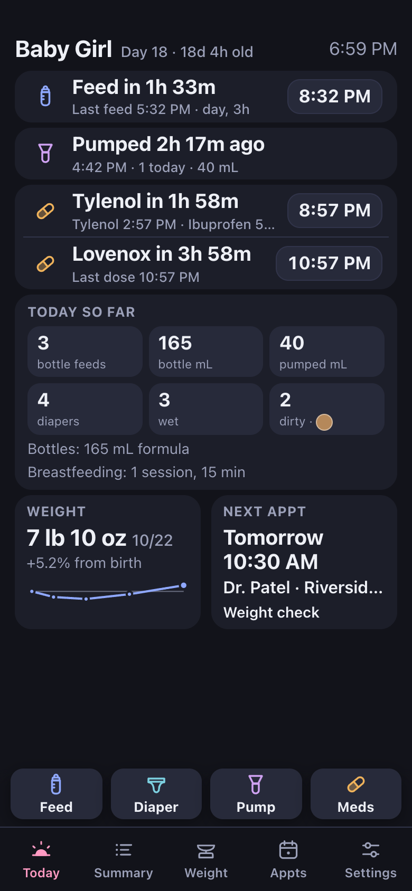
TodayThe feed line names the interval it used.
1.18
Tue Oct 27
Sleep
One button for sleep. Sleep sits second in the dock. Tap it when she drifts off and it starts timing. While she sleeps the button reads Woke up, outlined so you can find it in the dark, and one tap ends the sleep, with Undo in case it was a false alarm.
Naps and nights sort themselves. A sleep that starts between 7 PM and 7 AM is a night sleep, anything else a nap, and the sheet lets you flip it. Bedtime is simply the first night sleep of the evening, so there is nothing to mark.
How she fell asleep, at bedtime only. Feeding, rocking, held, pacifier, any mix of them, or on her own. Optional, and asked only for the first sleep of the night, where those habits form.
On Today. A sleep card under the feed timer: "Asleep 1h 12m since 9:40 PM", or "Awake 53m, woke 9:37 PM", which is the wake window. Three new tiles: sleep today, naps, and the longest stretch of the night.
In Summary. Sleep, naps, longest night stretch and bedtime for every day, and a Sleep filter in All entries. A sleep that crosses midnight counts toward each day it covers.
Still one screen. Switched-off types leave the dock instead of sitting there greyed out. With sleep on, diaper counts become one line under the tiles and several med countdowns fold into a single row, so Today fits an iPhone in every combination.
Tidier Summary and Today. The Summary table drops its Breast column and calls the bottle total "Total mL". The longest-stretch tile says which night it means: "last night max", or "tonight max" once she's asleep for the night. The next appointment's day and time always fit on one line, so the card is three lines.
Next: a sleep diary chart, one row per night, once there are a couple of weeks to look at.
TodayAwake or asleep, and for how long.
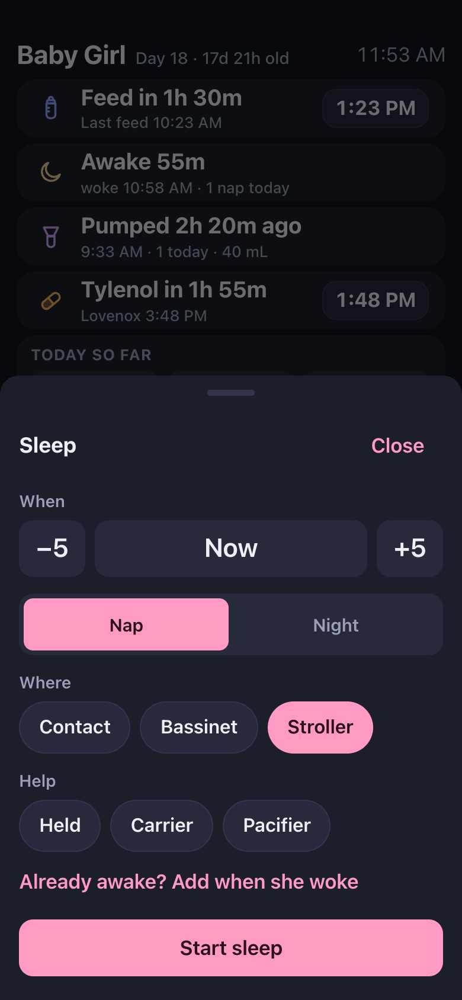
Sleep sheetTwo taps; the details are optional.
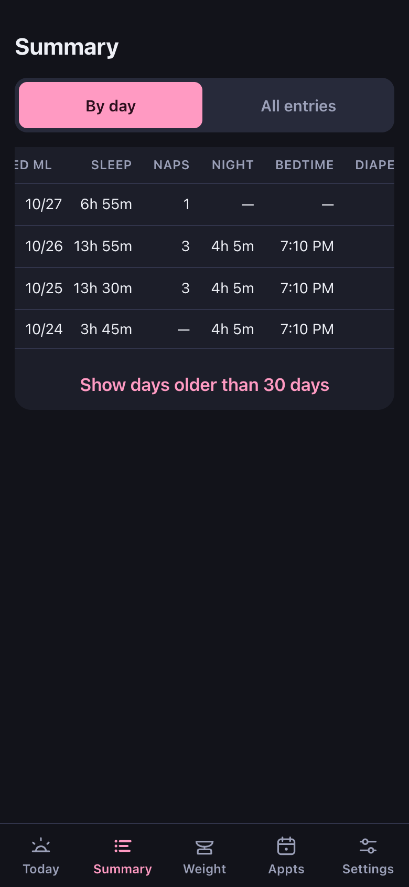
SummarySleep, naps, longest stretch, bedtime.
1.19
Tue Oct 27 · night
The sleep diary
A Sleep view in Summary. One row per night from 6 PM to 8 AM, newest on top, for the last two weeks. Sleep is a filled bar, a nap an outlined one, feeds are dots. Bedtime is where the first bar starts, the first stretch is how far it runs, and how she went down ("fed + rocked") sits under the date.
This week against last. Under the diary: average first stretch, average bedtime and night feeds per night, for the last seven finished nights and the seven before. No colours for good or bad, only the numbers.
Nights on Today. Once three nights are logged, the weight card makes way for a small chart: last night's first stretch, with a bar for each of the last seven nights. Tap it for the diary. Weight is a tap away on its own tab, and comes back here if sleep tracking is off.
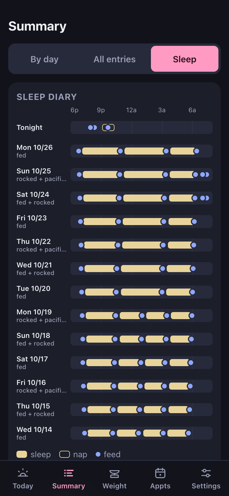
Sleep diaryTwo weeks of nights, stacked.
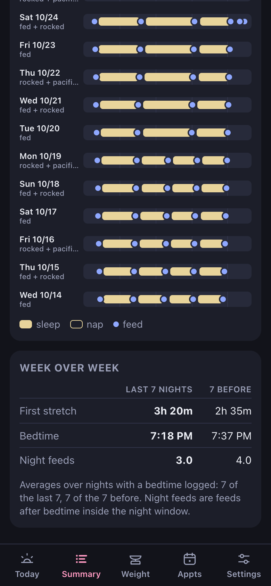
Week over weekFirst stretch, bedtime, night feeds.Nights cardWhere weight used to sit.
How it's built
A web app you add to the home screen. No app store, no updates to install.
Data lives in Firestore and streams to every open phone. Offline entries queue and sync later.
No accounts and no sign-in. The household link is the only secret, so it is shared between the two parents only.
Everything is stored in millilitres and grams and shown in whichever unit you pick first. Days roll over at midnight in the household's time zone.
It is a logbook, not a medical device. It has no thresholds, gives no advice and proposes no doses.
On the list
A per-day CSV of the Summary table (the entries CSV shipped in 1.7).
Daily counts against age-based targets, entered from the pediatrician, with paced progress through the day.
www.bebe.fyi redirect.
An Android pass; everything so far was verified on iPhone.
Feed and med reminders as notifications.
A light pass on the sleep diary once it has two real weeks in it.